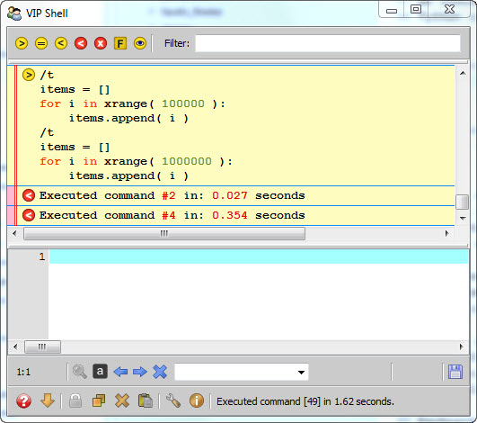

The code editor is where you enter Python code or shell commands to be executed. When entering Python code, you can enter any amount of text, ranging from a single Python expression up to a complete Python module containing thousands of lines of code.
Unlike some Python interpreter shells, the VIP Shell does not restrict you to entering a single line of code at a time. You have a complete text editor at your disposal for entering as much code as you like. The only restriction is that you must press the Ctrl-Enter key rather than just the Enter key when you want your code to be executed.
The reason for this should be fairly obvious. Since you can enter any number of lines of code at once, the Enter key performs the function it normally performs in a text editor. That is, it simply inserts a new line and allows you to keep entering text. In order to preserve this standard editor behavior, the shell’s execute action has been moved to the Ctrl-Enter key. This may take a bit of getting used to, but after a short break-in period this should quickly become second nature to you.
In addition to entering Python code, you can also enter shell commands. Shell commands always start with a leading forward slash character (‘/’) and perform shell specific actions. We’ll be discussing all of the various shell commands in later sections.
We should also note that you can freely mix shell commands and executable Python code within the code editor, as shown in the following example:
/t
items = []
for i in xrange( 100000 ):
items.append( i )
/t
items = []
for i in xrange( 1000000 ):
items.append( i )
In this example, we are trying to find out if the performance of appending to a list is roughly linear with respect to the size of the list. So we have created two short Python blocks, one which appends to an initially empty list 100,000 items, and another which appends 1,000,000 items.
Before each of these Python code blocks we have inserted a /t (Execution Time) shell command which times how long it takes to execute the immediately following Python code block.
When we press the Ctrl-Enter key, the VIP Shell parses the contents of the code editor buffer into its constituent shell commands and Python code blocks, and executes each in turn. The results of the execution are then displayed in the shell’s history items area, as shown below:
Some additional things worth noting are:
The history items list can contain quite a few different types of data, such as Command and Error output items, which we’ll be discussing in more detail in the section on history items.
The fact that the code editor buffer is cleared after executing the commands is normal. The shell does so in order to prepare the editor for the next command or code you want to enter. But don’t worry, if you want to edit or change your code and retry it, it’s easy to reload the code back into the editor by:
If the command or code you execute has a syntax error or generates an exception, the code editor buffer is not cleared automatically. The erroneous code remains in the code editor buffer to allow you to correct the code and retry execution.
If you don’t like the auto-clear behavior of the editor, you can change it using one of the status bar tool icons we’ll be discussing in the section on using the status bar.
The code editor provides are number of useful commands and actions available through the following keyboard shortcuts:
In addition to whatever values you define by executing or importing Python code, the shell also provides two additional values you can access and use within the code editor:
The underscore variable is always bound to the most recent result returned by the shell. Normally this occurs as the result of evaluating a Python expression, but it can also be set in other ways, such as by clicking on an underlined value link in an Exception or CalledFrom item.
For example, if you evaluate the expression:
'Hello world!'[:5]
the shell displays the result:
'Hello'
Now, if you evaluate:
_ + ' and goodbye'
the shell displays:
'Hello and good-bye'
The double underscore variable provides access to the shell history items. Each history item has an associated numeric id. You can use the __ variable to retrieve the value of a particular shell item by using the shell item’s id as the index of __.
Note
You can display shell item ids by toggling the id decorator on. The ids display in square brackets on the left side of the top line of each shell item.
For example, continuing on from our previous example for the _ variable, the last result displayed might look like:
We could then further manipulate this result as follows:
__[129] + '...'
which would display:
'Hello and good-bye...'
You can also retrieve multiple history item values using standard Python slice notation. For example:
__[10:15]
The result is a list containing the values of the shell items whose ids are in the specified range.
Note
You can use the __ variable to retrieve the value of any shell history item (or items), not just results. In each case the value returned is appropriate for the type of shell item referenced.
For example, a Command item returns the text of its Python code or shell command. Any file or directory item returns its fully qualified file or path name, and so on.